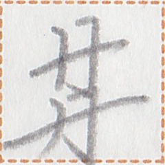
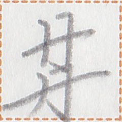

← Previous
Index
Next →
English: Please come to my home.
Chinese: 请来我的家里。
Chinese (pinyin): Qǐng lái wǒ de jiālǐ.
Pekzep (latin transcription): hia1 sak2 ut2 ie pai2 mut2.
Pekzep (hanzi transcription): 心来下於我家。
Pekzep (linzklā):  



Sound:
Analysis:
| hia1 | 心 | | imperative-verb-modifier | | I want you to |
| sak2 | 来 | | verb | | to come |
| ut2 | 下 | | post-verbial particle | politeness marker | (politeness) |
| ie | 於 | | coverb | takes a place / time | at |
| pai2 | 我 | | noun-modifier | | my |
| mut2 | 家 | | place word | | house |